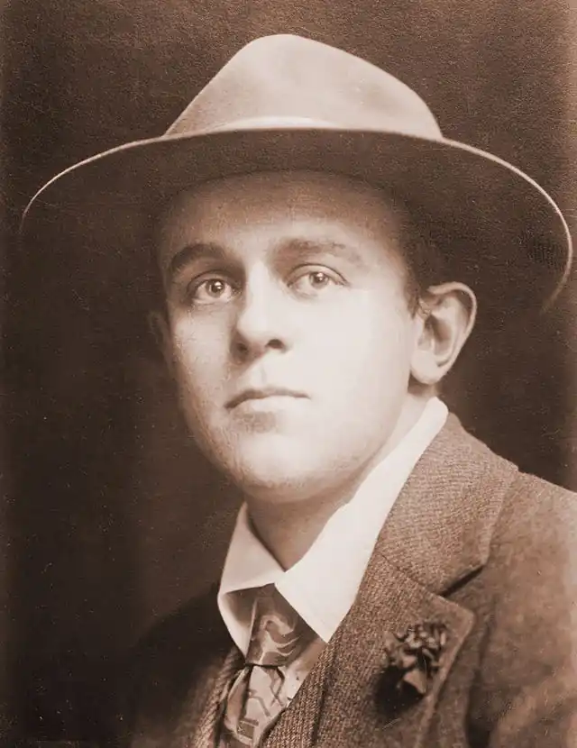

Рід Джон (22 жовтня 1887, Портленд, шт. Орегон — 1920, Москва) — американський письменник, журналіст.
Народився 22 жовтня 1887 року в Портленді, штат Орегон, США. Автор твору "Десять днів, що потрясли світ", численних публікацій в журналах і газетах. Він побував у Новоселиці у травні 1915 року. Тоді це прикордонне містечко опинилося у центрі воєнних дій між російськими і австро-угорськими військами. Редакція американського журналу "Метрополітен", де Джон Рід працював кореспондентом, направила його у Східну Європу, щоб розповісти про воєнні дії, які там відбувалися. Супроводити Ріда доручили художникові Бардмену Робінсону, який ілюстрував би матеріали журналіста. Шлях лежав через Румунію, яка тоді була союзницею Росії. Однак з'ясувалося, що одержати дозвіл на в'їзд в Росію — справа складна. І журналісти відважилися проникнути до неї з "чорного ходу". У глуху ніч мовчазний човняр переправив їх через прифронтову річку Прут. Так американські кореспонденти опинилися в Новоселиці. Своїми враженнями про перебування у Новоселиці Джон Рід поділився у кореспонденції "Війна у Східній Європі".
Джон Рід, 1916р. "Я ніколи не забуду Рівне – єврейське місто у смузі осідлості. Воно було російським зі своєю безладною обширністю, широкими вулицями, наполовину вимощеними бруківкою, з вибоїнами на тротуарах, кривими дерев'яними будиночками, оздобленими різьбленою яскраво-зеленою обшивкою, і натовпами дрібного чиновництва в мундирах. Тут багато було візницьких прольоток на маленьких колесах, із важкою російською упряжжю, правили ними патлаті дегенерати у зношених вельветових свитках і потворної форми куполоподібних капелюхах. Але все інше було єврейське... Центральна шосейна вулиця була захаращена смердючими покидьками серед в'язких калюж, які розбризкувалися при кожному проїзді візків. Навкруги дзижчали хмари вгодованих мух. По обидва боки тіснилося багато маленьких магазинів, а їх вивіски, які впадали в очі, розмальовані зображенням речей, що продаються, утворили вниз і вверх на вулиці якийсь божевільний ряд... Дуже багато магазинів, дуже багато візників, перукарень, кравців".